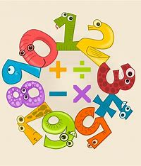
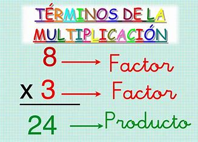
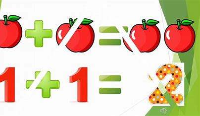

¿Qué son las matemáticas?
Las matemáticas son una ciencia formal y exacta que, basada en los principios de la lógica, estudia las propiedades y las relaciones que se establecen entre los entes abstractos. Estos entes pueden ser números, símbolos, figuras geométricas, etc. Las matemáticas se dividen en varias ramas, como la aritmética, el álgebra, la geometría y la estadística. Las matemáticas tienen múltiples aplicaciones en diversos campos del conocimiento humano, como la física, la ingeniería, la economía y la medicina.
VideoJuego
El Juego que encontraras es de:
La reglas son:
- Explicaciones claras y sencillas de conceptos y eventos históricos.
- Mapas y gráficos para entender mejor la geografía y la sociedad.
- Ejemplos y estudios de caso para ilustrar los conceptos.
- Enlaces a recursos adicionales para profundizar en temas específicos.
Ir al videojuego


